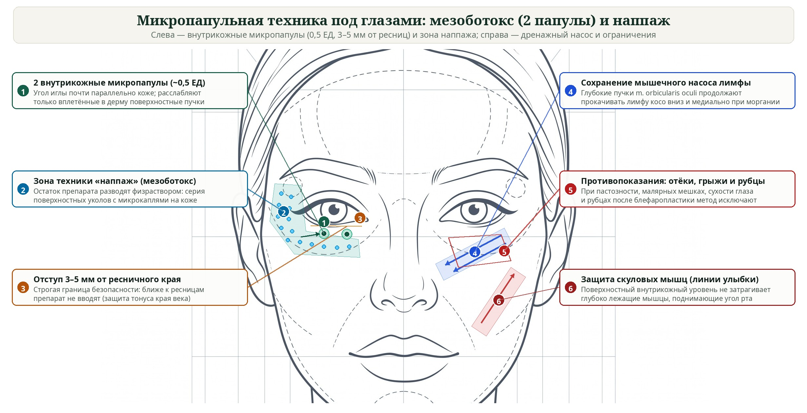

Микропапульная техника под глазами: мезоботокс и наппаж для тонкой кожи
Кожа нижнего века — самая тонкая на лице, и глубокая ботулинотерапия здесь может вызвать утренние отёки, контурирование мешков и тяжесть взгляда. Микропапульная техника и наппаж вводят препарат поверхностно — в верхние слои кожи, воздействуя только на тончайшие мышечные волокна, вплетённые в дерму. Разбираем, как устроен метод, кому он подходит и какие ограничения критичны.
Коротко о главном
- Метод строго поверхностный. Препарат вводится внутрикожно микропапулами и частыми касательными уколами (наппажем), а не в глубокую толщу мышечного брюшка.
- Дренажная функция века сохраняется. Поскольку глубокие пучки круговой мышцы глаза не выключаются полностью, мышечный насос продолжает прокачивать лимфу и венозную кровь при моргании.
- Мишень — мелкая мимическая сеточка под глазами. При жировых грыжах век, склонности к пастозности, рубцах после блефаропластики и глубоких статических заломах метод не показан.
- Ювелирная дистанция. Вколы под нижним веком выполняются строго с отступом 3–5 мм от ресничного края, а игла идёт практически параллельно поверхности кожи.
Суть проблемы: почему под глазами нельзя действовать так же, как на лбу
Круговая мышца глаза (m. orbicularis oculi) окружает глазницу концентрическим кольцом, а её поверхностные волокна напрямую вплетаются в тонкую дерму век. При прищуривании и широкой улыбке именно эти вплетённые пучки собирают кожу нижнего века в мелкую гофрированную сеточку.
Однако нижняя порция круговой мышцы выполняет жизненно важную физиологическую задачу — она работает как дренажный насос: при каждом смыкании век мышца проталкивает лимфу и венозную кровь от нижнего века косо вниз и кнутри к магистральным коллекторам. Если ввести стандартную дозу ботулотоксина глубоко в эту зону, насос остановится, и у предрасположенного пациента возникнет стойкий лимфостаз (пастозность и набухание мешков под глазами).
Кроме того, в непосредственной близости расположены мышца, поднимающая верхнее веко, слёзная железа и большая/малая скуловые мышцы, отвечающие за подъём угла рта при улыбке. Глубокий или неверно направленный вкол под глазом несёт риск асимметрии улыбки или ослабления тонуса нижнего века.

Как это работает: два приёма в одной процедуре
1. Внутрикожные микропапулы под нижним веком
Первый этап направлен на самые заметные складки под нижним веком, которые собираются при прищуре. Врач ставит две микропапулы с каждой стороны строго внутрикожно в проекции мимических линий:
- Отступ безопасности: точки располагают на расстоянии 3–5 мм ниже ресничного края нижнего века (подходить ближе к ресницам нельзя, чтобы не ослабить тарзальную порцию мышцы, прижимающую веко к глазному яблоку).
- Траектория иглы: шприц держат практически параллельно поверхности кожи (по касательной, срезом вверх), вводя иглу буквально на 1–1,5 мм в верхний слой дермы.
- Микродозировка: в каждую микропапулу вводится минимальная доза (ориентировочно около 0,5 ЕД в пересчёте на стандартную концентрацию), что формирует крошечный внутрикожный бугорок («папулу»).
Глубокий вкол (в мышечный слой): блокирует всю толщу мышечного сектора — морщины уходят, но выключается лимфатическая помпа и падает тонус века. Поверхностный вкол (микропапула и наппаж): препарат остаётся в дерме и расслабляет только поверхностные мышечные волокна, вплетённые в кожу, сохраняя работу глубокого мышечного насоса.
2. Техника «наппаж» (поверхностный мезоботокс)
Второй этап дополняет микропапулы мягкой проработкой всей латеральной и подглазничной сетки. Оставшееся в шприце небольшое количество препарата дополнительно разводят стерильным физиологическим раствором (снижая концентрацию единиц в единице объёма).
Затем врач выполняет серию частых, лёгких поверхностных касаний-уколов (техника наппаж) по зоне «гусиных лапок» и тонкой коже под глазами. На поверхности кожи при этом выступают мельчайшие прозрачные микрокапли раствора, которые аккуратно распределяют по коже кончиком пальца в стерильной перчатке для равномерного впитывания через микропроколы, а единичные росинки крови промокают ватной палочкой с антисептиком.
Кому подойдёт метод, а кому стоит воздержаться
Микропапульная техника — это специализированный инструмент для строго определённого морфотипа периорбитальной зоны. Перед процедурой врач обязательно проводит мимические пробы (зажмуривание, улыбка) и щипковый тест тонуса нижнего века.
| Кому методика подходит идеально | Когда метод не подойдёт или противопоказан |
|---|---|
| Мелкая динамическая сеточка морщин под глазами, появляющаяся преимущественно при улыбке и прищуривании | Склонность к утренним отёкам и пастозности век (даже поверхностное расслабление может усилить задержку воды) |
| Тонкая кожа нижнего века с сохранённой эластичностью и плотным прилеганием века к глазу | Грыжи нижних век и малярные мешки (суфы) — ботулотоксин не убирает жировые пакеты и может подчеркнуть их контур |
| Отсутствие избытка кожи (птоза) и нормальный тонус тарзальной пластинки века | Рубцы после хирургической блефаропластики — снижение тонуса на фоне рубцовой тяги грозит выворотом нижнего века (эктропионом) |
| Пациенты, которым противопоказана нижняя точка классической глубокой схемы вокруг глаз | Синдром сухого глаза и глубокие статические заломы с выраженной потерей коллагенового каркаса |
Восстановление и результат
Сразу после процедуры. На тонкой коже под глазами видны аккуратные внутрикожные микропапулы и следы от наппажа, которые рассасываются и впитываются самостоятельно в течение нескольких часов. Врач обрабатывает зону и наносит успокаивающий противоотёчный/противосиняковый гель (например, на основе арники или «Траумель С»).
Режим и ограничения после процедуры:
- Первые 3–4 часа: не прикасаться к коже вокруг глаз руками, дать микрокаплям и папулам полностью распределиться.
- Первые 24 часа: не наносить плотный консилер и макияж на зону проколов, не тереть веки при умывании, не использовать массажные роллеры и микротоки.
- 3–5 дней: исключить алкоголь, избыток солёной пищи на ночь и интенсивные тренировки.
- 10–14 дней: воздержаться от бани, сауны, горячих ванн и активного прогрева лица.
Когда оценивать эффект. Как и при классической ботулинотерапии верхней трети, действие развивается постепенно: первые признаки разглаживания тонкой сеточки появляются на 3–5-й день, а финальный результат оценивают на плановом осмотре через 14 дней.
Частые вопросы пациентов (FAQ)
Чем микропапульная техника (мезоботокс) отличается от обычного ботокса вокруг глаз?
При классической ботулинотерапии препарат вводится глубже для расслабления всего мышечного пучка. При микропапульной технике и наппаже разведённый препарат вводится строго внутрикожно (поверхностно, под углом почти параллельно коже), поэтому он расслабляет только тонкие поверхностные волокна круговой мышцы глаза, вплетённые в дерму, сохраняя глубокую дренажную функцию века.
Больно ли делать микропапулы и наппаж под глазами?
Используется инсулиновый шприц с ультратонкой иглой 30–31G, а проколы выполняются на минимальной внутрикожной глубине. Пациенты описывают ощущения как серию лёгких поверхностных покалываний.
Можно ли сочетать мезоботокс под глазами с классической коррекцией лба и межбровья?
Да, эти методики часто выполняются в рамках одного визита: врач сначала проводит основную коррекцию лба, межбровья и базовых точек у наружного угла глаза, а оставшиеся единицы препарата доразводит физиологическим раствором для мягкой проработки сетки нижнего века.
Можно ли делать микропапульную технику при утренних отёках, грыжах или после блефаропластики?
При стойкой утренней пастозности, выраженных грыжах нижних век, малярных мешках и синдроме сухого глаза от инъекций под ресничным краем воздерживаются. После перенесённой хирургической блефаропластики наличие рубцовой ткани также требует крайней осторожности из-за риска ослабления тонуса века и его выворота (эктропиона).
Материал носит информационно-ознакомительный характер и не заменяет очную консультацию врача-косметолога. Процедуры подбираются индивидуально после диагностики.